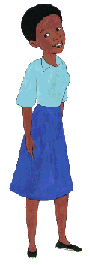
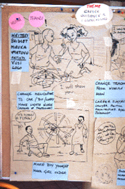
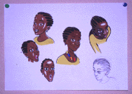

In the Eastern and Southern region of African, young girls face gender discrimination which begins at birth and continues throughout their lives, affecting her education, access to health care and social services, and workload in the home.
In many parts of Eastern and Southern Africa, girls are sometimes referred to in derogatory terms or as someone who doesn't belong. As they grow older, girls must serve male family members, care for younger children, fetch water and firewood, wash clothes and cook. When the mother leaves the household to earn an income, it is the girl who has to take over her role. As a result of these circumstances, many girls are denied childhood.
As the girl grows, the disparities in treatment and status continue. The problem of "teenage motherhood" is endemic in many countries. Thousands of adolescent girls get pregnant every year. They are often not yet ready, physically or psychologically, for motherhood. They are often thrown out of the educational system. The situation of adolescent girls becomes even more worrying in the context of AIDS. The pandemic has hit the region harder than any other area of the world. Rape, adolescent pregnancies, and practices such as multiple partner relationships, female genital mutilation, initiation rites, forced marriage and polygamy have all contributed to the rapid spread of HIV.
Through the animated series Sara, UNICEF hopes to tackle these very serious issues in an entertaining way. Much like the Meena series, Sara's character was developed after lengthy research in the region to ensure her success at communicating to her audience. With the help of multi-media materials including books, comic books, and merchandising, the Sara series will offer solutions and insight on issues highly important in eastern and southern Africa. These issues include:
|
|
 |
[upper level | home]